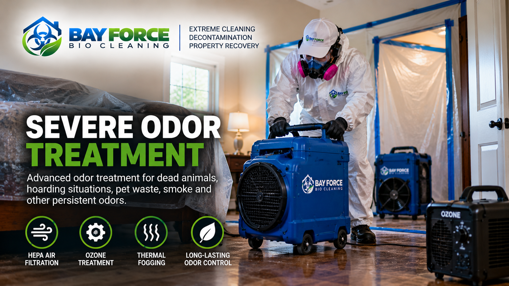

SPECIALTY CLEANING & DECONTAMINATION
Severe Odor Treatment
Persistent odors can remain in a property even after ordinary cleaning. Bay Force Bio Cleaning provides specialized cleaning and odor-treatment solutions for properties affected by severe or difficult-to-remove odors.

OUR APPROACH
Severe Odor Treatment May Include
Source Cleaning
Detailed cleaning of surfaces and affected areas to help address materials contributing to persistent odors.
HEPA Filtration
HEPA filtration equipment may be used when appropriate to help manage airborne particles during the cleanup.
Professional Decontamination
Cleaning and decontamination using professional products and procedures appropriate to the conditions encountered.
Odor Treatment
Specialized odor-treatment methods may be used depending on the source, severity, and condition of the property.
Difficult Areas
Attention to areas where odors may persist, including rooms, enclosed spaces, and difficult-access areas.
Property Recovery
Our goal is to help return affected areas to a cleaner, fresher, and more manageable condition.
THE BAY FORCE PROCESS
A Systematic Approach to Persistent Odors
1. Evaluate
We review the affected areas and the conditions contributing to the odor.
2. Clean
Contaminated or affected surfaces are cleaned based on the conditions present.
3. Treat
Appropriate odor-treatment and decontamination methods are applied where needed.
4. Recover
We focus on helping make the affected space cleaner, fresher, and more usable.
SERVING THE NORTH BAY & SAN FRANCISCO
Severe Odor Treatment Across Our Service Area
Bay Force Bio Cleaning provides specialty odor treatment and cleaning services throughout Sonoma County, Marin County, Napa County and San Francisco.
Sonoma County • Marin County • Napa County • San Francisco
A VARCAL COMPANY
Dealing With a Persistent Odor Problem?
Tell us about the property and the odor conditions you are experiencing. Our team can review the information and help determine the appropriate next step.